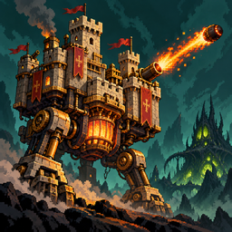

Credits · Danksagung · Teşekkürler
Stomphold is made by Eda Cansu Başoğlu.
Art, sound, music and tools from others
Thank you to every artist and maker whose work is in the game:
- Worldmap Builder (Godot addon for the upgrade tree and world map) · github.com/don-tnowe/godot-worldmap-builder · MIT, see addons/worldmap_builder/LICENSE.md; two missing default returns added in nodes/worldmap_path.gd so it compiles on Godot 4.7
- Animated Explosions by Luis Zuno (ansimuz) · opengameart.org/content/animated-explosions · CC0, see assets/fx/LICENSE.txt
- Pixelify Sans font · github.com/eifetx/Pixelify-Sans via Google Fonts · SIL Open Font License 1.1, see assets/fonts/OFL.txt
- Cannon fire, Explosions, sound effects · opengameart.org/content/cannon-fire, opengameart.org/content/explosions-4 · CC0
- RPG Sound Pack · opengameart.org/content/rpg-sound-pack · CC0
- Interface Sounds by Kenney · opengameart.org/content/interface-sounds · CC0
- "The Bard's Tale", "The Old Tower Inn", "Exploration", "Medieval Victory Theme" and "Medieval Defeat Theme" by RandomMind (music) · opengameart.org/content/medieval-the-bards-tale, medieval-the-old-tower-inn, medieval-exploration, medieval-victory-theme, medieval-defeat-theme · CC0
- "Medieval Theme" by Umplix, "Meadow Thoughts" by Écrivain (title music) · opengameart.org/content/medieval-theme, meadow-thoughts · CC0
- "Crowded Pub" by Bobjt, "Minstrel Dance" and "Harvest Season" by RandomMind · opengameart.org/content/crowded-pub, medieval-minstrel-dance, medieval-harvest-season · CC0
- "Epic March Loop" by Eldritch Grim, "Deliberate Concealment" by northivanastan · opengameart.org/content/epic-march-loop, deliberate-concealment · CC0
- "Some militaristic tune" by Spring Spring (map music) · opengameart.org/content/some-militaristic-tune · CC0
- "4 Music Box Tracks" by Aureolus_Omicron (upgrade tree music: the spooky waltz and the sad tune) · opengameart.org/content/4-music-box-tracks · CC0
- "QaziJamJam orchestral battle theme" by Emma_MA (raid music) · opengameart.org/content/qazijamjam-orchestral-battle-theme · CC0
- "Soul Rebellion" by Umplix (boss music) · opengameart.org/content/soul-rebellion · CC0
- RPG sounds by Kenney · opengameart.org/content/50-rpg-sound-effects · CC0
- 80 CC0 creature SFX (packs 1 and 2) by rubberduck · opengameart.org/content/80-cc0-creature-sfx, 80-cc0-creture-sfx-2 · CC0
- 20 sword sound effects by StarNinjas · opengameart.org/content/20-sword-sound-effects-attacks-and-clashes · CC0
- Tiny Swords (free pack) by Pixel Frog: island tiles, buildings, trees, bushes, rocks, sheep, clouds, ribbons, parchment, portraits, villagers, soldiers (warrior, lancer, archer), buttons, wooden boards, the slate panel and card parchment, the keeps' castles, towers, barracks and monastery · pixelfrog-assets.itch.io/tiny-swords · free on itch.io, commercial use allowed (checked on the store page by the owner)
- Insect Enemies (beetle, mantis, maggot, eggs, acid) · jeevo.itch.io/insect-enemies · free on itch.io, commercial use allowed (checked on the store page by the owner)
- Monsters: Pixel Fantasy Monsters Pack by Laphkal (goblin, orc, imp, acolyte, mushroom, giant spider, cave bat, slime and more) · itch.io · free for commercial use with this credit; no reselling the pack
- Spider (animated) · itch.io free download · commercial use allowed (checked by the owner)
- Wizard character · itch.io free download · commercial use allowed (checked by the owner)
- Catapult and its stone · itch.io free download · commercial use allowed (checked by the owner)
- Ember Caldera Lite (ash, lava rocks, braziers, torches, obsidian) · itch.io · commercial use allowed, no reselling (see the pack's LICENSE.txt)
- Shikashi's Fantasy Icons Pack by Shikashi, based on designs from game-icons.net (fate card pictures, the die, the treasure chest) · itch.io; game-icons.net · commercial use allowed (see the pack's .txt); the game-icons.net designs are CC BY 3.0: credit to Shikashi and game-icons.net
- Boss: Demon Slime by chierit · itch.io free download · commercial use allowed (store page, checked by the owner)
- Bringer of Death by Clembod · itch.io free download · personal and commercial use, no redistributing or reselling (see the pack's License.txt)
- Boss: Mecha-Stone Golem by Darkpixel (kronovi) · itch.io free download · commercial use allowed (store page, checked by the owner)
- Monsters pack (King Slime, Tree monster) · itch.io free download · free and commercial projects, credit appreciated (see the pack's READ ME.txt)
- Pixel Art Snow and Ice Tileset (snowman) · itch.io free download · commercial use allowed, no reselling or redistributing (see the pack's ReadMe.txt)
- Snow tileset (snowy pines, rocks, floor colours) · itch.io free download · free download, commercial use allowed (checked by the owner)